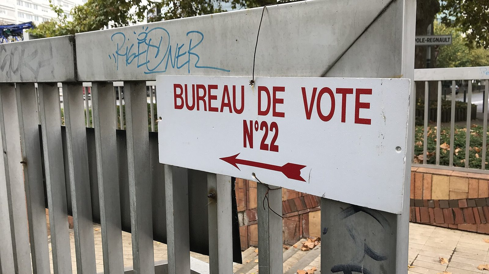
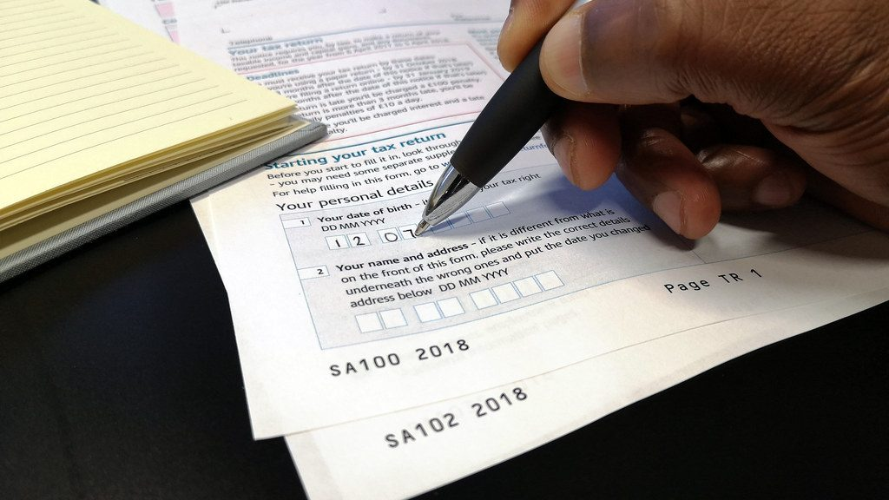
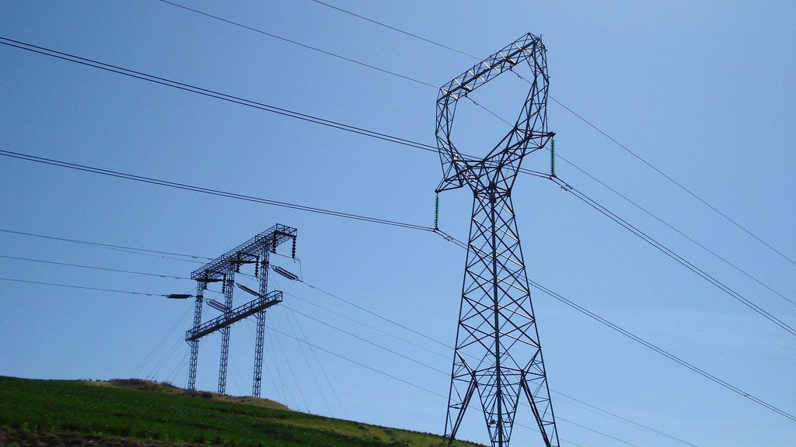
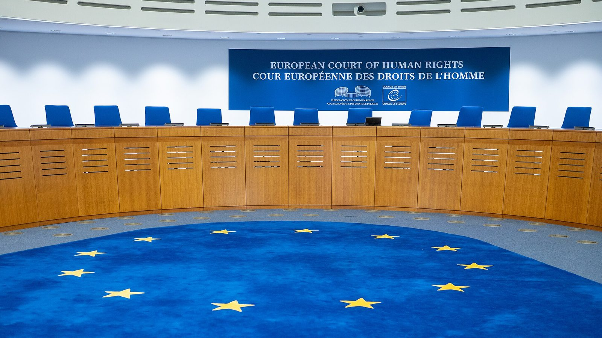
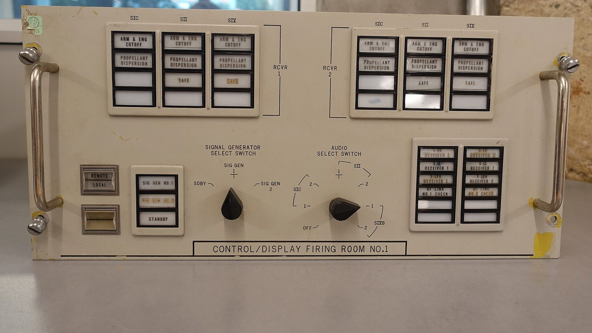

Monde
Monde
Tous les dossiers
Cherchez par mot-clé ou filtrez par rubrique : chaque dossier sépare les faits établis, les débats et ce qu'on ne sait pas.
Monde
 Monde
Monde
Guerre avec l'Iran et détroit d'Ormuz : pourquoi le carburant coûte si cher
Chronologie de la guerre, rôle du détroit d'Ormuz, prix du pétrole et du gazole en France, aides publiques et scénarios. Données arrêtées au 18 octobre 2026. Monde
Monde
Droits de douane américains : ce que paient les produits européens en octobre 2026
L'accord UE-États-Unis, la décision de la Cour suprême, les droits en vigueur par produit, le poids du marché américain pour la France et les scénarios. Données arrêtées au 18 octobre 2026. Monde
Monde
Guerre en Ukraine : où en sont le front et les négociations en octobre 2026
Le front selon les sources indépendantes et selon Moscou, les victimes civiles, les demandes de chaque camp, l'aide européenne et les scénarios. Données arrêtées au 18 octobre 2026.Élections de mi-mandat américaines du 3 novembre 2026 : ce qui est en jeu
Les sièges en jeu, la majorité actuelle, ce que les élections de mi-mandat ont produit dans le passé, les pouvoirs du Congrès et les scénarios. Données arrêtées au 18 octobre 2026.COP31 à Antalya : ce que les pays ont promis pour le climat, et où ils en sont
Les engagements climatiques et leur écart avec l'accord de Paris, les décisions de la COP30, la sortie des États-Unis, la position européenne et les enjeux d'Antalya. Données arrêtées au 18 octobre 2026.Guerre en Ukraine : ce que l'aide coûte à l'Europe et à la France, et ce que coûterait un retrait
L'aide européenne et française en chiffres, le matériel livré, ce que coûterait un retrait selon les études disponibles, le coût d'une guerre qui dure et les décisions américaines d'octobre 2026. Données arrêtées au 18 octobre 2026.Le pacte européen sur la migration et l'asile : ce qui a changé le 12 juin 2026
Calendrier, filtrage, procédures à la frontière, Eurodac et adaptation du droit français. Données arrêtées au 8 octobre 2026.Immigration et finances publiques : ce que disent les études
Méthodes, résultats des études du CEPII et de l'OCDE, origine des chiffres contestés et limites des calculs. Données arrêtées au 8 octobre 2026.Une Assemblée sans majorité : de la dissolution de 2024 à aujourd'hui
Chronologie de la dissolution, des censures et des gouvernements successifs, et ce que prévoit la Constitution. Données arrêtées au 8 octobre 2026.
PolitiquePrésidentielle 2027 : comment vérifier un programme économique
Coût brut, recettes, effets sur les comportements, faisabilité juridique : une méthode commune pour lire les chiffrages, appliquée à tous les candidats de la même façon. Données arrêtées au 8 octobre 2026.La Cour de justice de la République : bilan d'une juridiction contestée
Fonctionnement, décisions rendues depuis 1993 et arguments pour et contre son maintien. Données arrêtées au 8 octobre 2026.Présidentielle 2027 : comment se financent les campagnes, et pourquoi les banques hésitent
Ressources autorisées, remboursement public, réticence des banques et propositions en débat. Données arrêtées au 8 octobre 2026.Comment les groupes ont voté à l'Assemblée sous les deux mandats d'Emmanuel Macron
Chaque vote solennel et chaque motion de censure de 2017 à 2026, groupe par groupe, avec des graphiques lisibles et le lien vers chaque scrutin officiel. Données arrêtées au 16 octobre 2026.Les députés sont-ils plus absents qu'avant ? Ce que mesurent les chiffres depuis 2007
Participation aux votes, présence en commission, délégations de vote, sanctions, effet du non-cumul : ce que l'on peut mesurer, ce que l'on ne peut pas, et ce qui a changé depuis 2007. Données arrêtées au 16 octobre 2026. Politique
Politique
Mouvements sociaux : comment Emmanuel Macron et ses gouvernements construisent leur réponse, des gilets jaunes au 17 octobre 2026
Trois niveaux d'analyse : le discours du pouvoir, de l'allocution du 10 décembre 2018 à celle du 18 octobre 2026 ; ce que ce discours laisse de côté, au regard des constats du Conseil constitutionnel, du Conseil d'État, de la Défenseure des droits, du Conseil de l'Europe et de l'ONU ; les effets connus du cadrage sur l'opinion ; et la question de l'intention, qui reste sans preuve. Avec le meilleur argument du gouvernement. Données arrêtées au 19 octobre 2026. Politique
Politique
Stratégie, biais institutionnel ou réflexe : ce que les sources permettent de dire de la réponse sécuritaire aux mouvements sociaux
Méthode des hypothèses concurrentes ; ce que chaque hypothèse prédit et ce que l'on observe ; les outils restrictifs ajoutés après chaque crise et leur sort devant les juges ; la doctrine française et le refus de la désescalade par une partie de la hiérarchie policière ; les qualifications politiques avancées avant les conclusions judiciaires ; ce qui contredit chacune des trois explications. Données arrêtées au 19 octobre 2026. Politique
Politique
Eau potable en outre-mer : ce qui est établi sur les coupures en Guadeloupe, en Martinique, à Mayotte et à La Réunion
Les pertes des réseaux, les coupures et leur ancienneté en Guadeloupe et en Martinique ; la dépendance à la pluie, les tours d'eau, le choléra et l'objectif de fin des coupures en 2026 à Mayotte ; la qualité de l'eau et les cyclones à La Réunion ; le partage des responsabilités entre collectivités et État ; les plaintes et l'information judiciaire ouverte à Paris ; la vérification des chiffres qui circulent. Données arrêtées au 20 octobre 2026. Économie & Société
Économie & Société
Le chômage remonte, l'emploi reste élevé : comment lire les deux chiffres
Deux indicateurs qui semblent se contredire et mesurent des choses différentes. Données arrêtées au 8 octobre 2026. Économie & Société
Économie & Société
La dette publique française : niveau, coût et risques
Niveau, charge d'intérêts, taux d'emprunt, comparaisons européennes : les chiffres de la dette et leur contexte. Données arrêtées au 8 octobre 2026. Économie & Société
Économie & Société
Budget 2027 : ce que contient le projet et ce qu'en dit le Haut Conseil des finances publiques
Objectif de déficit, effort de 54 milliards, répartition entre dépenses et recettes, avis du Haut Conseil des finances publiques. Données arrêtées au 8 octobre 2026.
Économie & SociétéLes niches fiscales : combien elles coûtent et ce que l'on sait de leur efficacité
Nombre, coût, fiabilité des chiffrages et évaluations disponibles des dépenses fiscales. Données arrêtées au 8 octobre 2026.Fraude fiscale et fraude sociale : ce que l'on mesure et ce que l'on estime
Montants détectés, montants estimés, sommes recouvrées : trois chiffres différents à ne pas confondre. Données arrêtées au 8 octobre 2026.Qui finance les retraites ?
Ressources, dépenses et solde du système de retraite selon le Conseil d'orientation des retraites. Données arrêtées au 8 octobre 2026.Assurance maladie : où va l'argent, et ce que l'on sait des arrêts de travail
Répartition des dépenses entre ville, hôpital et médico-social, évolution des indemnités journalières, contrôles et économies prévues. Données arrêtées au 8 octobre 2026. Économie & Société
Économie & Société
Déserts médicaux : pourquoi certains territoires manquent de médecins
Accessibilité aux médecins généralistes, formation, liberté d'installation et proposition de loi Garot. Données arrêtées au 8 octobre 2026.Logement : pourquoi il reste cher malgré 46 milliards d'aides par an
Aides publiques, construction, prix et loyers : les chiffres du logement et les explications en débat. Données arrêtées au 8 octobre 2026.Cybercriminalité : ce que mesurent les chiffres officiels
Escroqueries en ligne, piratages, rançongiciels : les chiffres du ministère de l'Intérieur et leurs limites. Données arrêtées au 8 octobre 2026.Intelligence artificielle et emploi : ce que montrent les premières études
Exposition des tâches, effets observés sur les offres d'emploi et les embauches de jeunes, chiffres qui circulent sans source. Données arrêtées au 8 octobre 2026.Deepfakes : ce que dit le droit et ce que permet la technique
Infractions prévues par la loi SREN, obligations de transparence du règlement européen sur l'IA, limites de la détection. Données arrêtées au 8 octobre 2026.Canicules et sécheresses : ce que l'on sait de leur coût pour la France
Surmortalité liée aux canicules, sinistres climatiques assurés, pertes agricoles de 2026 et limites des chiffrages. Données arrêtées au 8 octobre 2026.
Économie & SociétéPrix de l'électricité : ce qui a changé avec la fin de l'Arenh
Tarif réglementé, fin de l'Arenh, versement nucléaire universel et ce qui détermine la facture. Données arrêtées au 8 octobre 2026.L'intelligence artificielle à l'école : ce que dit le cadre officiel et ce que montrent les études
Cadre d'usage du ministère, formation obligatoire des élèves, résultats de PISA 2025 et de l'OCDE, et incertitudes. Données arrêtées au 8 octobre 2026.Outreau : comment une erreur judiciaire collective s'est produite
Procédure expliquée, chronologie, ce que la justice a établi et n'a pas établi, commission d'enquête parlementaire, débat sur la parole de l'enfant et réformes qui ont suivi (loi du 5 mars 2007, responsabilité des magistrats). Données arrêtées au 8 octobre 2026.Affaire Troadec : ce que le procès a tranché
Enquête, procédure, faits jugés, expertises, peine et altération du discernement, points restés contestés et emballement médiatique initial dans l'affaire du quadruple meurtre d'Orvault. Données arrêtées au 8 octobre 2026.Affaire Flactif : ce que la justice a établi
Enquête scientifique, procédure, faits jugés, peines, désistement d'appel inédit de 2007 et demande de libération conditionnelle déposée en 2025, dans l'affaire de la tuerie du Grand-Bornand. Données arrêtées au 8 octobre 2026.Affaire Grégory : l'état de la procédure en octobre 2026
Procédure expliquée, décisions de justice depuis 1984, annulations, prescription, investigations en cours et ce que l'affaire a changé. Données arrêtées au 8 octobre 2026.Affaire Dupont de Ligonnès : ce qui est établi quinze ans après
Faits établis, procédure expliquée, chronologie, éléments matériels, thèses en présence, fausses pistes dont l'erreur de Glasgow, et état de l'enquête en 2026 : ce que l'on sait et ce que l'on ne sait pas. Données arrêtées au 8 octobre 2026.Féminicides : ce que mesurent les chiffres officiels et associatifs
Définitions, cadre juridique, méthodes de comptage, séries officielles depuis 2014, tentatives et « suicides forcés », comparaisons internationales, débats sur l'inscription du féminicide et du contrôle coercitif dans la loi. Données arrêtées au 18 octobre 2026.Affaire Fiona : trois procès pour établir les responsabilités
Enquête, instruction, procès successifs, cassation et peines définitives dans l'affaire Fiona ; ce que la justice a établi, ce qu'elle n'a pas pu établir et ce que l'affaire montre du fonctionnement de la cour d'assises. Données arrêtées au 16 octobre 2026.Affaire Romand : ce que la justice a établi
Mensonge de longue durée, faits jugés, procès de 1996 sans possibilité d'appel, expertises psychiatriques, peine de perpétuité et période de sûreté, règles de la libération conditionnelle des condamnés à perpétuité et décisions de 2019. Données arrêtées au 16 octobre 2026.Affaire Omar Raddad : pourquoi la révision a été refusée
Condamnation sans appel possible, grâce, deux demandes de révision, traces ADN découvertes en 2001 et 2015, fonctionnement et statistiques de la procédure de révision, réforme de 2014 et débats sur le doute. Données arrêtées au 16 octobre 2026. Affaires & Enquêtes
Affaires & Enquêtes
Combien de temps faut-il pour être jugé en France ?
Délais moyens par type de procédure, durée de l'instruction, engorgement des juridictions criminelles, réformes successives des cours criminelles jusqu'à la loi du 23 juillet 2026, effectifs comparés à l'Europe et pistes débattues. Données arrêtées au 8 octobre 2026. Affaires & Enquêtes
Affaires & Enquêtes
Usage de la force par la police : ce que disent les chiffres de l'IGPN
Fonctionnement et saisine de l'IGPN, séries d'enquêtes depuis 2016, tirs mortels et tirs sur véhicules, suites disciplinaires, signalements des usagers, contrôle externe par le Défenseur des droits, débat sur la loi de 2017 et la présomption de légitime défense, et limites de ces statistiques. Données arrêtées au 8 octobre 2026.Justice des mineurs : ce qu'a changé le code de 2021
Principes historiques de la justice des mineurs, procédure en deux temps, séries de délais selon plusieurs mesures, évolution des mineurs mis en cause, évaluations disponibles, loi du 23 juin 2025, remplacement des centres éducatifs fermés par des unités à priorité éducative, débats et pistes. Données arrêtées au 8 octobre 2026.ADN et reconnaissance faciale : ce que ces preuves peuvent et ne peuvent pas établir
Contamination et transfert d'ADN, histoire et taille du fichier des empreintes génétiques, contrôle du Conseil constitutionnel et de la Cour européenne, fiabilité mesurée des algorithmes de reconnaissance faciale, usage par la police, règlement européen sur l'IA, loi du 23 juillet 2026 et décisions de justice récentes. Données arrêtées au 8 octobre 2026. Affaires & Enquêtes
Affaires & Enquêtes
Acquittement, relaxe, non-lieu, classement, prescription : ce que ces décisions disent, et ce qu'elles ne disent pas
Les cinq façons dont une procédure pénale se termine sans condamnation, la présomption d'innocence et la règle du doute, la protection des personnes acquittées, la dénonciation calomnieuse et l'arrêt Klouvi c. France, le poids de la médiatisation. Sans examen d'une affaire en cours. Données arrêtées au 18 octobre 2026.
PsychologieViolences sexuelles : pourquoi la parole des plaignants est mise en doute, et ce que la recherche en dit
Délais de plainte, sidération, mémoire, stéréotypes, fausses accusations, classements sans suite, victimisation secondaire et présomption d'innocence. Dossier fondateur de la rubrique, sans examen d'une affaire particulière. Données arrêtées au 18 octobre 2026.Peut-on se tromper sincèrement dans un témoignage ? Ce que la recherche sur la mémoire permet d'établir
Mémoire reconstructive, questions suggestives, identification des suspects, confiance du témoin, parole des enfants, règles françaises d'audition et leçons d'Outreau. Deuxième dossier de la rubrique, sans examen d'une affaire en cours. Données arrêtées au 18 octobre 2026.Pourquoi reste-t-on parfois sous l'emprise d'une personne ou d'un groupe ? Ce que le droit et la recherche permettent d'établir
Violences au sein du couple, contrôle coercitif, dérives sectaires, délit de sujétion psychologique créé en 2024, chiffres de la Miviludes et leurs critiques, débat sur la loi intégrale. Troisième dossier de la rubrique, sans examen d'une affaire particulière. Données arrêtées au 18 octobre 2026.L'effet de désinformation : comment une question ou un article peut modifier le souvenir d'un témoin de bonne foi
Les expériences d'Elizabeth Loftus, les faux souvenirs d'enfance et leur réplication de 2023, le débat sur la façon de compter un faux souvenir, les fausses informations politiques et la mémoire, l'effet des avertissements. Données arrêtées au 19 octobre 2026.Détecter le mensonge : ce que la science établit sur le comportement, les micro-expressions et le polygraphe
Précision moyenne des jugements humains, absence d'indice fiable, mythe du regard fuyant, micro-expressions et synergologie, polygraphe selon l'Académie des sciences américaine, approches verbales et leurs critiques. Données arrêtées au 19 octobre 2026. Psychologie
Psychologie
La vision en tunnel : comment des enquêteurs et des experts de bonne foi écartent les éléments qui contredisent leur hypothèse
Biais de confirmation, besoin de conclure, interrogatoires orientés par la présomption de culpabilité, experts en empreintes influencés par le contexte, l'erreur d'identification de l'attentat de Madrid, la leçon d'Outreau et les contre-mesures. Données arrêtées au 19 octobre 2026.La polarisation de groupe : pourquoi un groupe qui délibère prend souvent une position plus tranchée que ses membres
Expériences fondatrices, jurys fictifs et sévérité des sanctions, expérience du Colorado, mécanismes d'influence sociale et d'arguments, conditions qui évitent la polarisation, chambres d'écho et résultats contradictoires sur Facebook et Twitter. Données arrêtées au 19 octobre 2026.L'effet du témoin : pourquoi la présence d'autres personnes peut retarder l'aide, et pourquoi l'aide vient pourtant le plus souvent
Expériences de Darley et Latané, diffusion de la responsabilité, méta-analyse de 2011 sur les situations dangereuses, analyse de 219 conflits filmés par des caméras de surveillance, le mythe des 38 témoins du meurtre de Kitty Genovese, et l'obligation légale de porter secours en France. Données arrêtées au 19 octobre 2026.
PsychologieLa soumission à l'autorité : ce que les expériences de Milgram et leurs réplications établissent, et ce qu'elles n'établissent pas
L'expérience de 1963, les 21 variantes et leur taux moyen, les réplications de 2009 et 2017, la transposition française en jeu télévisé, les doutes des participants révélés par les archives, l'adhésion à l'autorité plutôt que l'obéissance aveugle, et la mesure du sentiment de responsabilité sous la contrainte. Données arrêtées au 19 octobre 2026. Psychologie
Psychologie
Fatigue, heure, actualité : ce que les études mesurent sur les facteurs étrangers au dossier dans les décisions de justice
L'étude des comités de libération conditionnelle israéliens et ses critiques, la simulation qui montre un artefact possible, les défaites sportives et les peines des mineurs aux États-Unis, l'effet de l'actualité télévisée sur les peines, l'indulgence le jour de l'anniversaire du prévenu en France et aux États-Unis. Données arrêtées au 19 octobre 2026.La délibération des jurés d'assises : ce que la recherche sait de la construction de l'intime conviction
Règles du délibéré en France, modèle du récit, poids des préférences de départ, synthèse de 206 études sur les jurys, influence du président selon les enquêtes françaises, motivation des arrêts et cours criminelles sans jurés. Données arrêtées au 19 octobre 2026.L'illusion de vérité : pourquoi une affirmation répétée paraît plus vraie, même quand elle a été démentie
L'expérience fondatrice de 1977, la méta-analyse de 51 études, la connaissance qui ne protège pas, les fausses informations sur les réseaux sociaux, l'influence persistante après correction, le débat sur l'effet « boomerang » des démentis, et la différence avec l'effet de simple exposition. Données arrêtées au 19 octobre 2026.Les théories du complot : ce que la recherche en psychologie établit sur les besoins qui y conduisent, et ce qu'elle ne confirme pas
Les trois motifs identifiés par la recherche, le besoin d'unicité, le besoin de contrôle et la méta-analyse qui le remet en cause, la synthèse de 170 études, les enquêtes Ifop de 2018 et 2019 en France, la question de la mesure, et ce qui réduit la vulnérabilité aux manipulations. Données arrêtées au 19 octobre 2026.Aucun dossier ne correspond. Essayez un autre mot ou une autre rubrique.